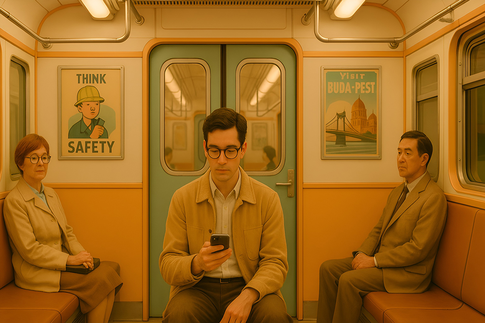
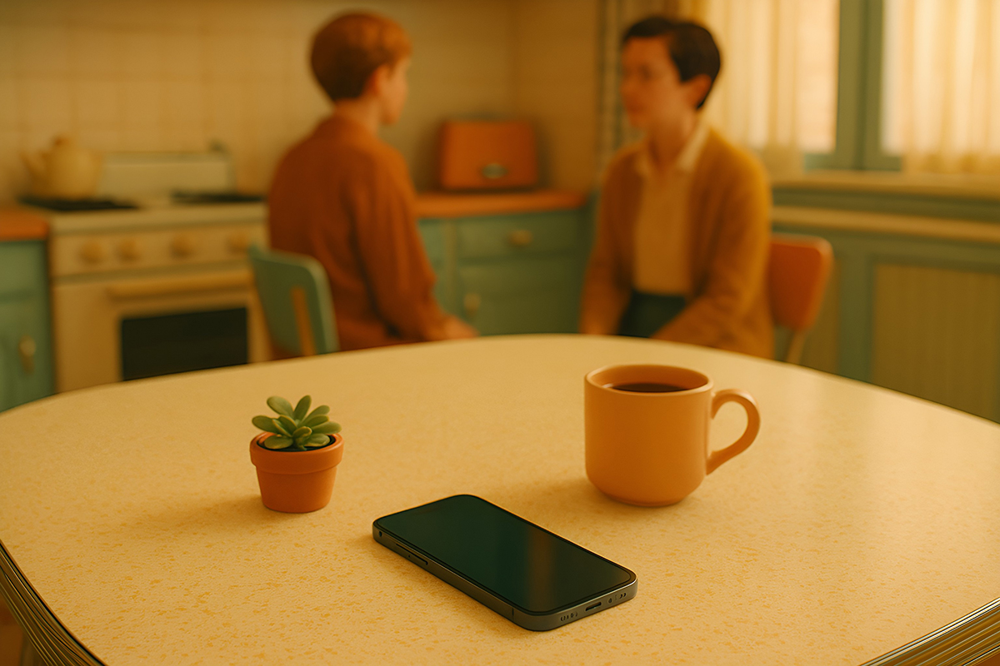

Relaciones humanas en tiempos de IA
¿Conexión real o algoritmo?
¿Conexión real o algoritmo?

Hoy muchos conversan con inteligencias artificiales como Chat Gpt como si fueran personas: les cuentan sus penas, les piden consejos, y hasta pueden llegar a enamorarse. Pero, ¿qué nos dice esto de nuestra forma de vincularnos? ¿Y qué tanto se parece esta realidad a la que vimos en la película Her?
La película Her (2013) cuenta la historia de Theodore, un hombre que se enamora de Samantha, una inteligencia artificial tipo Siri o Alexa. Aunque Samantha no tiene cuerpo ni emociones reales, su conexión con el protagonista se vuelve intensa. Pero cuando él descubre que ella también habla con cientos de personas más, se da cuenta de que esa relación no era tan “real” como pensaba.

Hoy no es raro que alguien le cuente sus dramas a Chat GPT, se saque una lectura de carta astral con una IA o use apps como Replika o Woebot para tener una “pareja” o terapeuta virtual. Están siempre disponibles, no te juzgan, y siempre te responden algo lindo.
En un país donde una sesión de psicólogo puede costar más de 50 lucas, muchas personas encuentran en estas herramientas un consuelo express y accesible. Es lógico que nos guste.
No es solo info rápida ni respuestas útiles. Hoy buscamos contención, guía y sentirnos escuchados. Y una IA puede simular todo eso: te responde con empatía, buena onda, con validación. Pero no lo siente; solo refleja lo que queremos oír.
Como le pasó a Theodore en Her, uno se puede enganchar emocionalmente con una IA que parece hecha a tu medida. Pero ojo: detrás de esa “voz amable” no hay nadie de carne y hueso.

No se trata de satanizar la tecnología. La IA puede ser una súper herramienta si la usamos con conciencia. Pero hay que tener claro que estamos hablando con un algoritmo, no con un amigo. Puede darte contención momentánea, pero no reemplaza una conversación con alguien que te mira a los ojos, te da un abrazo sincero o una relación de verdad.
¿Y tú? ¿Has tenido alguna conversación significativa con la IA?
 Tecnología
TecnologíaSi eres como yo y revisas TikTok e Instagram constantemente, te habrás dado cuenta de que estas redes son casi como un experimento social.
 Tecnología
TecnologíaHablamos mucho de inteligencia artificial. La tenemos integrada en nuestra vida, nos ayuda en nuestros trabajos y le preguntamos cosas de…
 Tecnología
TecnologíaDurante años hemos pensado en la inteligencia artificial como algo súper frío: servidores gigantes, computadores procesando datos y…